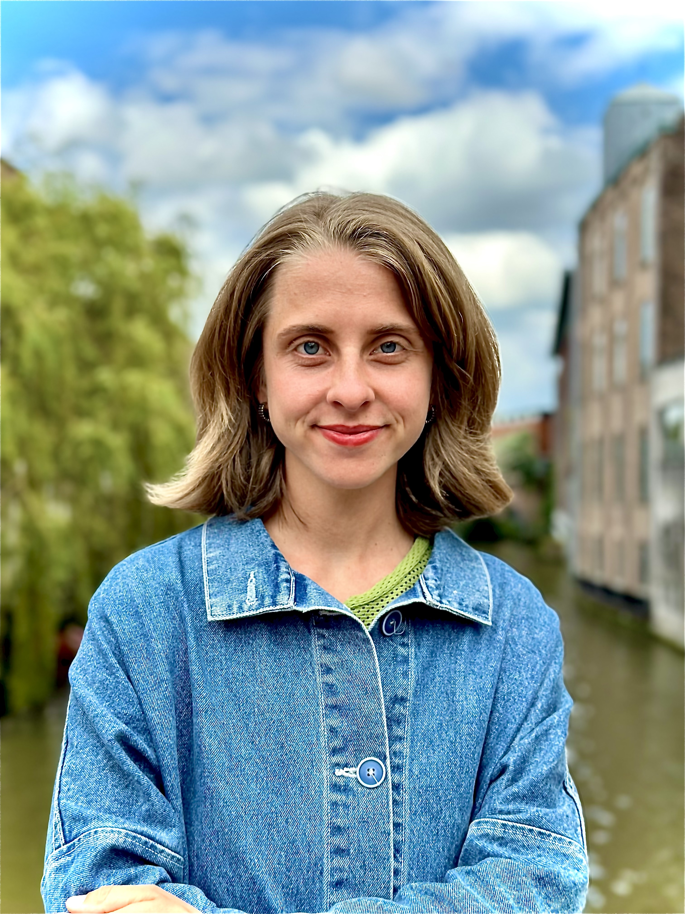

Incoming Postdoctoral Fellow
King Center on Global Development
Stanford University
alyssa.heinze@berkeley.edu
I am an incoming Postdoctoral Fellow at Stanford's King Center on Global Development. In Fall 2027, I will join the University of California, Davis as an Assistant Professor of Political Science. I received my PhD in Political Science from the University of California, Berkeley. My research sits at the intersection of the political economy of development, gender and politics, and environmental and climate politics, with a regional focus on India.
Much of my work focuses on understanding how men hold onto power. This includes research that investigates male elite “capture” of democracy and the limitations of institutional solutions to democratize power. My current research program focuses on how agricultural transformations, natural resource politics, and climate change have shaped men's dominance in historical and contemporary perspective. A related line of work investigates the broader politics of gender and climate change.
My work has appeared in the American Political Science Review, The Journal of Politics, and World Development. My research has been funded by the Empirical Study of Gender Research Network, the Center for Effective Global Action, the National Science Foundation, the Fulbright Association, the Global Democracy Commons, the Institute of International Studies, and the Weiss Fund for Research in Development Economics.
Heinze, Alyssa R. 2025. "Democratic Deepening or Elite Persistence? How Local Elites Adapt to Electoral Reform in Rural India." American Political Science Review. FirstView.
Winner of the 2024 Paula D. McClain Award for the MPSA Best Paper
Winner of the 2024 MPSA Evan Ringquist Field Award for best paper on the topic of political institutions.
Winner of the Philo Sherman Bennett Prize in Political Science
Honorable mention, Center for the Study of Law and Society Paper Prize
Access.
Heinze, Alyssa R., Brulé, Rachel E. and Simon Chauchard. 2025. "Who Actually Governs? Gender Inequality and Political Representation in Rural India." The Journal of Politics. 87(2).
Access.
Chauchard, Simon, Brulé, Rachel E. and Alyssa R. Heinze. 2025. "Inclusive Reforms as Levers for Social Exclusion: The Paradoxical Consequences of Quotas for Women in Rural India." World Development. 196(2025).
Access.
When Crises Entrench Gendered Power: Male Elite Adaptation in the Ugandan Parliament
With Cecilia Josefsson, Amanda Clayton, and Pär Zetterberg
R&R.
Can Climate Change Disrupt Male Dominance?
Flipping the Script: Restructuring Deliberation in Patriarchal Political Institutions
With Rachel Brulé and Simon Chauchard
Decentralizing Democratic Erosion: Local Election Delays in the World’s Largest Democracy
With Pratik Mahajan